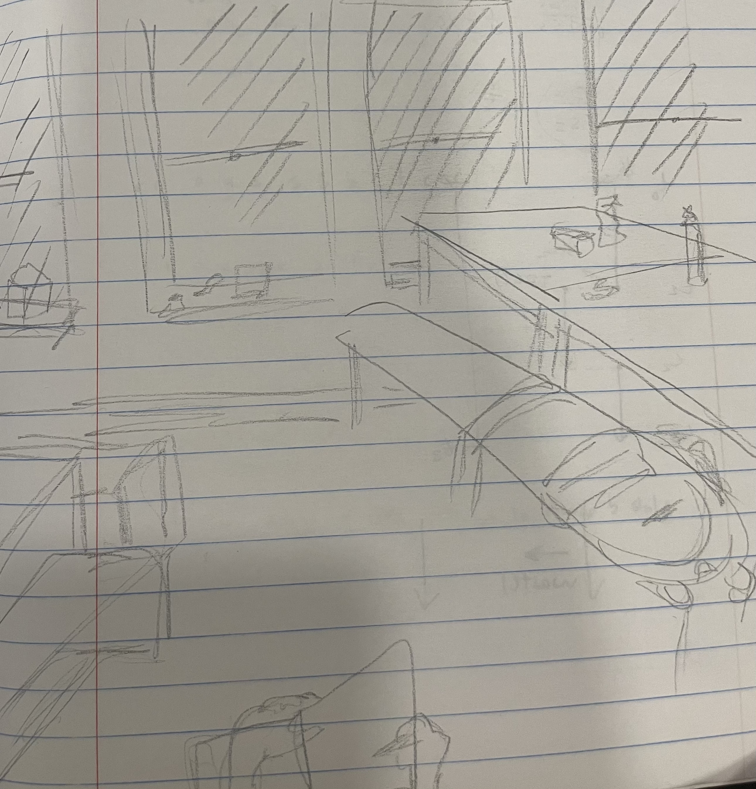
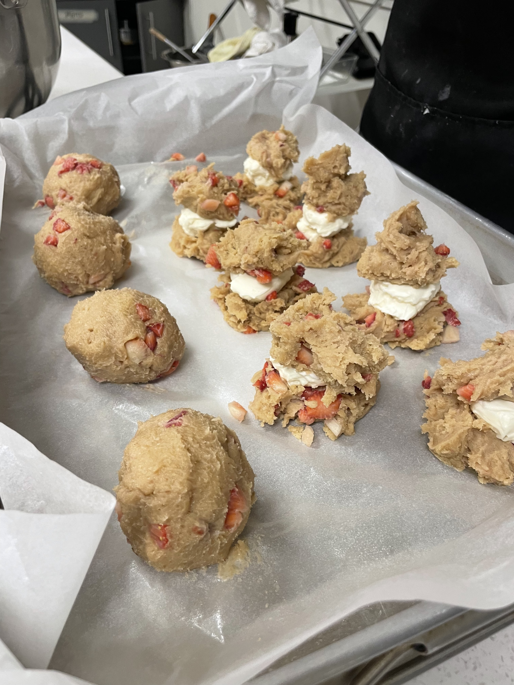

Lightweight Ideas
Doodle
Key Points:
- Draw wherever you are/what you are looking at
- Draw exactly what you see (perspective)
-
Don't worry too much about framing-- what's important/what you focused
on will stand out
-
Work with pen/something that can't be erased-- there are no mistakes
-
You can incorporate a time limit if wanted, but also not necessary.
- Mostly the point is to draw it all in one go.

This is an example of a quick doodle of where I was while working on
this assignment
Journal
Key Points:
- At the beginning include the date, time, and day of the week
- Don't worry about what to write-- nothing is too mundane
-
Keep small mementos from the day and tape them in or place in pocket
at the end
An example entry:
2/26/24 Monday 8:46pm
Just ate dinner with friend1 and friend2. Been working with them in
Scully for the past couple of hours. I keep forgetting to go to the
UStore to get more gum...
Food Journal
Key Points:
- Take a picture of your food
-
Can describe the story around the food-- who made it, who did you eat
with, what your thoughts are on the food, etc
- Can include other things in the photo too, friends included

These are some cookies my friend Helen made. They're strawberry cheesecake
cookies, and were very tasty. They expanded a lot when they were being
baked and Helen said they were becoming good friends.